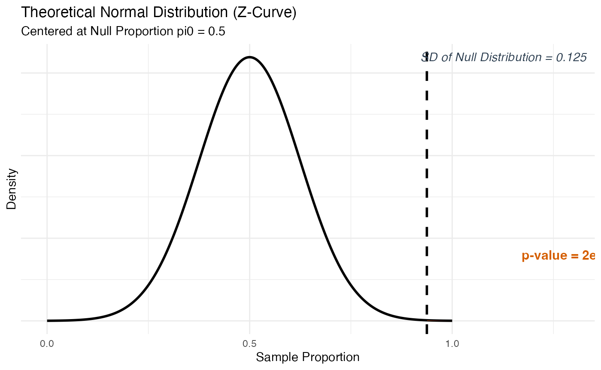
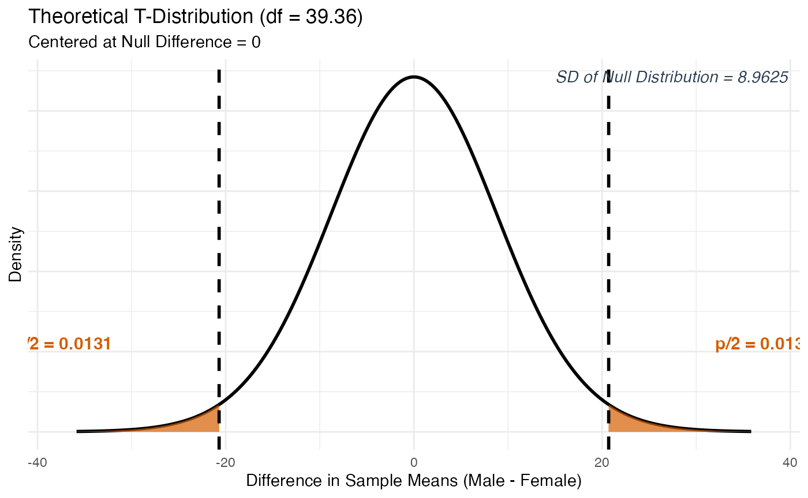

Motivation
This package grew out of teaching STAT 218:Introduction to Statistics to undergraduates at UNL this semester. The course uses the textbook Introduction to Statistical Investigations (ISI) by Tintle et al., which comes with its own web-based applet interface for running simulations and tests. That applet works, but it keeps students at arm’s length from real data analysis tools. I wanted something that lived inside R and RStudio, so students could run inference, see polished visualizations, and at the same time start building intuition for how R itself works: naming objects, exploring your environment, reading dataset documentation, and understanding what different kinds of outputs look like.
The idea for the three-part object structure came directly from
learning about S3 objects in this course (STAT-892: Development of a
statistical software) taught by Dr. Heike Hofmann. That gave me the
idea: why not create a test object or a confidence interval object, and
then dispatch print(), plot(), and
plot_steps() from it? Every function in this package
follows exactly that pattern. The result is a consistent workflow: you
run a function, store the result, and then explore it in three different
ways.
One other early idea was to include animations that would show the simulation process building up step by step. After thinking it through, I decided that was too ambitious for what this course needed right now, and I pivoted to a clean, well-structured static package instead.
The package is currently named Stat218Applet, though the
name I had in mind from early on was R4IntroStats, something that
signals the package’s broader purpose beyond any single course number at
any single university. The rename never happened for a practical reason:
by the time the full scope of the package came together, the GitHub
repository was set up, the pkgdown site was live, and every function,
namespace entry, and documentation file was already tied to the current
name. Rather than risk breaking anything at that stage, I kept
Stat218Applet as the working name with the intention that a proper
rename to R4IntroStats would be a cleaner operation, if the package ever
reaches a more stable, CRAN-submission state.
Who Is This Package For?
This package is designed for introductory statistics students and instructors, not just at UNL, but at any university that teaches a course at the level of ISI. The package is intentionally built to be a gentle on-ramp to statistical concepts and to R and R Studio. Students who have never programmed before will get practice:
- Storing results in named objects and seeing them appear in their RStudio Environment pane
- Passing those objects into different functions (
print,plot,plot_steps) and understanding what each does - Reading dataset documentation with
?dataset_nameand function documentation with?function_name - Working with data frames, formulas, and the
~notation
Every function and every bundled dataset has detailed, readable help
documentation written with intro-stats students in mind. If a student
gets confused about what an argument does, ?test_1mean will
give them a full plain-English explanation. That is by design.
A Note on Terminology: 2SD, Simulation, and Theory
This package uses the language of the ISI textbook directly. The three inference methods are called 2SD, simulation, and theory throughout. These correspond to:
-
2SD: A simulation-based confidence interval method
using the rule statistic ± 2 × SD of the bootstrap
distribution. This is intentionally restricted to 95% confidence
intervals because that is how the book introduces the concept. For other
confidence levels, use
"simulation". - simulation: A general simulation-based approach (bootstrap for CIs, randomization/permutation/sign-flipping for tests) that works for any confidence level or any hypothesis direction.
- theory: The formula-based approach using Z or T distributions, appropriate when validity conditions are met.
If you are familiar with other statistics courses or textbooks, “2SD” is essentially a simplified bootstrap interval, and “simulation” is the full bootstrap or randomization test. The naming follows ISI so that students can move between the textbook and this package without confusion.
Student-Friendly Design
A few design decisions worth knowing about upfront:
Error messages use the cli package and
are written to be readable, not alarming. If you supply the wrong
combination of arguments, the message will tell you exactly what went
wrong and how to fix it.
Printed output is formatted for a freshman or
sophomore audience. Running print(result) on any object
produces a clean, labeled summary – not a raw R dump.
Validity warnings appear consistently in
print(), plot(), and plot_steps()
whenever conditions for theory-based inference are questionable. A
student who never looks at the printed output will still see the warning
if they call plot(). These warnings are informational, not
errors – the function still runs.
Dual input routing means every function accepts
input in two ways: either as summary statistics (the way textbook
problems are usually presented) or as raw data via formula
and data. Students who are working from a textbook exercise
can pass in successes and n directly. Students
doing a project with a real dataset can load it into R and pass in the
data frame.
The show_symbols Helper
One persistent challenge in intro stats, and all other instructors
will agree with me, is that students confuse population parameters with
sample statistics – writing μ when they mean x̄, or π when they mean p̂.
The show_symbols() function addresses this directly by
displaying a reference table of all symbols used in the course.
# See symbols for proportions
show_symbols("proportions")
# See symbols for means
show_symbols("means")
# See symbols for regression and correlation
show_symbols("regression")
# See a table of common symbol mix-ups
show_symbols("mistakes")
# See all four panels at once
show_symbols("all")This function is designed to be pulled up during class, during office hours, or any time a student is unsure which symbol belongs in their hypothesis statement.
The Bundled Datasets
The package includes 32 datasets drawn from the ISI textbook,
covering the chapters relevant to the functions in this package. Most
come from Chapters P, 2, 3, 5, 6, 7, and 10 of ISI. Each dataset is
documented – type ?dolphin, ?yawning, or
?haircuts to read about what the data represents, where it
came from, and which chapter uses it. A few examples:
| Dataset | Chapter | Used for |
|---|---|---|
dolphin |
Ch. 1/P | One-proportion test |
yawning |
Ch. 5 | Two-proportion test |
organdonor |
Ch. 5 | Two-proportion test |
haircuts |
Ch. 2/6 | One-mean and two-mean tests |
closefriends |
Ch. 6 | Two-mean test |
firstbase |
Ch. 7 | Paired test |
jjvsbicycle |
Ch. 7 | Paired test |
oldfaithful2 |
Ch. 6 | Two-mean test |
handwidth |
Ch. 10 | Correlation and regression |
examtimesscores |
Ch. 10 | Regression |
Two-Phase Development
The package was built using a breadth-first approach. In
Phase 1, all functions were sketched out and built to
accept summary statistics only. The goal was to have the full scope of
the package exist before polishing any single function. In Phase
2, every function was updated to also accept raw data via
formula and data. Phase 2 also introduced
table_regression(), show_symbols(), and the
boxplot mode in explore_2vars().
Part 1: Hypothesis Testing Functions
All hypothesis test functions return an S3 object. You store it, then
explore it with print(), plot(), and
plot_steps(). The sections below walk through each function
using real datasets from the package.
test_1prop() – One Proportion Test
Tests whether a single population proportion π equals a hypothesized
value. Accepts either summary statistics (successes,
n) or raw data (formula, data,
success_level). Uses either simulation (The Great Shuffle)
or a theory-based Z-test.
# Summary statistics path -- theory method
# Testing whether dolphins trained with the "yes" signal respond more than 50% of the time
# (from the ISI dolphin study: 15 out of 16 correct responses)
result_1prop <- test_1prop(
successes = 15,
n = 16,
null_pi = 0.5,
alternative = "greater",
method = "theory"
)
#> Warning: ! Validity conditions for the theory-based Z-test may not be met.
#> ℹ Expected successes under H0: 8 (need >= 10)
#> ℹ Expected failures under H0: 8 (need >= 10)
#> ℹ Consider using `method = "simulation"` for a more reliable p-value.
print(result_1prop)
#>
#> ── 1-Sample Proportion Test (Theory) ───────────────────────────────────────────
#> ℹ Sample Proportion (p-hat): 0.9375 (15/16)
#> ℹ Null Hypothesis (pi0): 0.5
#> ℹ Alternative: greater
#> • SD of Null Distribution: 0.125
#> • Test Statistic (Z): 3.5
#> • P-Value: 2e-04
# Single ggplot -- safe to render
plot(result_1prop)
# 3-panel patchwork -- run in RStudio
plot_steps(result_1prop)
data(dolphin)
# Raw data path -- simulation method using the bundled dolphin dataset
result_1prop_sim <- test_1prop(
formula = ~ response,
data = dolphin,
success_level = "Improve",
null_pi = 0.5,
alternative = "greater",
method = "simulation",
sim_reps = 1000
)
print(result_1prop_sim)
# Dotplot is available for simulation -- single ggplot, renders cleanly
plot(result_1prop_sim, plot_type = "dotplot")test_1mean() – One Mean Test
Tests whether a single population mean μ equals a hypothesized value.
The sd_type argument distinguishes between a known
population σ (Z-test) and an estimated sample s (T-test). Simulation
uses a parametric bootstrap centered at the null value.
# Raw data path -- theory T-test
# Testing whether students underestimate a 10-second interval (null: mu = 10)
result_1mean <- test_1mean(
formula = ~ estimate,
data = timeestimate,
null_mu = 10,
alternative = "two.sided",
method = "theory"
)
print(result_1mean)
plot(result_1mean)
plot_steps(result_1mean)
# Summary statistics path -- theory T-test
result_1mean_s <- test_1mean(
x_bar = 9.1,
n = 48,
sd_val = 2.4,
sd_type = "sample",
null_mu = 10,
alternative = "two.sided",
method = "theory"
)
print(result_1mean_s)
#>
#> ── 1-Sample Mean Hypothesis Test (Theory) ──────────────────────────────────────
#> ℹ Observed Mean (x-bar): 9.1
#> ℹ Standard Deviation (s): 2.4 | n: 48
#> ℹ Null Hypothesis (mu0): 10
#> ℹ Alternative: two.sided
#> • SD of Null Distribution: 0.3464
#> • Test Statistic (T): -2.598
#> • P-Value: 0.0125
# Simulation path -- parametric bootstrap (requires raw data)
result_1mean_sim <- test_1mean(
formula = ~ estimate,
data = timeestimate,
null_mu = 10,
alternative = "two.sided",
method = "simulation",
sim_reps = 1000
)
print(result_1mean_sim)test_2prop() – Two Proportion Test
Tests whether two population proportions are equal (H₀: π₁ − π₂ = 0).
Uses either a randomization test (simulation) or a pooled Z-test
(theory). The plot() method for this function returns a
patchwork object – the null distribution on top and a
formatted 2×2 contingency table on the bottom – so it should be run
interactively.
# Summary statistics path -- theory
# Yawning study: does seeing someone yawn make you more likely to yawn?
result_2prop <- test_2prop(
success_1 = 10,
n_1 = 34,
success_2 = 4,
n_2 = 16,
group_names = c("Yawn Seed", "No Seed"),
alternative = "greater",
method = "theory"
)
#> Warning: ! Validity conditions for the theory-based Z-test may not be met.
#> ℹ All four cells in the 2x2 table must have at least 10 observations.
#> ℹ Minimum cell count found: 4
#> ℹ Consider using `method = "simulation"` for a more reliable p-value.
print(result_2prop)
#>
#> ── 2-Sample Proportions Hypothesis Test (Theory) ───────────────────────────────
#> ℹ Yawn Seed: p1-hat = 0.2941 (successes = 10, n = 34)
#> ℹ No Seed: p2-hat = 0.25 (successes = 4, n = 16)
#> ℹ Null Hypothesis: pi1 - pi2 = 0
#> ℹ Alternative: pi1 - pi2 > 0
#> • Observed Difference (p1-hat - p2-hat): 0.0441
#> • SD of Null Distribution: 0.1361
#> • Test Statistic (Z): 0.324
#> • P-Value: 0.3729
#> Warning: ! Validity conditions for the theory-based Z-test may not be met.
#> ℹ All four cells in the 2x2 table must have at least 10 observations.
#> ℹ Minimum cell count found: 4.
#> ℹ Consider using `method = "simulation"` for a more reliable result.
# Patchwork (null distribution + contingency table) -- run in RStudio
plot(result_2prop)
plot_steps(result_2prop)
# Raw data path -- using the bundled yawning dataset
result_2prop_raw <- test_2prop(
formula = response ~ yawn_seed,
data = yawning,
success_level = "Yawn",
alternative = "greater",
method = "simulation"
)
print(result_2prop_raw)Note:
plot()fortest_2prop()andci_2prop()combines a null distribution plot with a gt contingency table using patchwork. Run it interactively in RStudio to see the full layout.
test_2mean() – Two Mean Test
Tests whether two population means are equal (H₀: μ₁ − μ₂ = 0). Theory uses an unpooled T-test with Satterthwaite degrees of freedom. Simulation uses a permutation test (requires raw data). An optional boxplot is available when raw data is provided.
# Summary statistics path -- theory T-test
# Do men and women pay different amounts for haircuts?
result_2mean <- test_2mean(
x_bar_1 = 28.5,
sd_1 = 23.1,
n_1 = 25,
x_bar_2 = 49.2,
sd_2 = 38.4,
n_2 = 25,
group_names = c("Male", "Female"),
alternative = "two.sided",
method = "theory"
)
print(result_2mean)
#>
#> ── 2-Sample Means Hypothesis Test (Theory) ─────────────────────────────────────
#> ℹ Male: x-bar = 28.5 | s = 23.1 | n = 25
#> ℹ Female: x-bar = 49.2 | s = 38.4 | n = 25
#> ℹ Null Hypothesis: mu1 - mu2 = 0
#> ℹ Alternative: mu1 - mu2 != 0
#> • Observed Difference (x-bar1 - x-bar2): -20.7
#> • SD of Null Distribution: 8.9625
#> • Test Statistic (T): -2.31
#> • P-Value: 0.0262
# Single null distribution plot -- renders cleanly
plot(result_2mean)
# Raw data path -- using the bundled haircuts dataset
result_2mean_raw <- test_2mean(
formula = cost ~ sex,
data = haircuts,
alternative = "two.sided",
method = "theory"
)
print(result_2mean_raw)
# Boxplot option -- requires raw data, run in RStudio
plot(result_2mean_raw, plot_type = "boxplot")
plot_steps(result_2mean_raw)test_paired() – Paired Data Test
Tests whether the mean of paired differences equals zero (H₀: μ_d =
0). Accepts three input formats: summary statistics
(x_bar_d, sd_d, n_d), a single
differences column (~ Differences), or two columns
representing before/after measurements (After ~ Before).
Simulation uses a sign-flipping approach and requires raw data.
# Two-column formula: wide - narrow for each baseball player
result_paired <- test_paired(
formula = wide ~ narrow,
data = firstbase,
name = "Wide - Narrow",
alternative = "two.sided",
method = "theory"
)
print(result_paired)
plot(result_paired)
plot_steps(result_paired)
# Summary statistics path
result_paired_s <- test_paired(
x_bar_d = 0.075,
sd_d = 0.06,
n_d = 22,
name = "Wide - Narrow",
alternative = "two.sided",
method = "theory"
)
print(result_paired_s)
#>
#> ── Paired Data Hypothesis Test (Theory) ────────────────────────────────────────
#> ℹ Mean Difference (x-bar_d): 0.075
#> ℹ SD of Differences (s_d): 0.06
#> ℹ Number of Pairs (n_d): 22
#> ℹ Null Hypothesis: mu_d = 0
#> ℹ Alternative: mu_d != 0
#> • SD of Null Distribution: 0.0128
#> • Test Statistic (T): 5.863
#> • P-Value: 0
# Sign-flipping simulation -- requires raw data
result_paired_sim <- test_paired(
formula = bicycle ~ jj,
data = jjvsbicycle,
name = "Bicycle - JJ",
alternative = "two.sided",
method = "simulation",
sim_reps = 1000
)
print(result_paired_sim)test_correlation() – Correlation Test
Tests whether the population correlation ρ equals zero (H₀: ρ = 0).
Accepts either the observed correlation and sample size directly
(r_obs, n) or raw data via
formula. Theory converts r to a T-statistic with df = n −
2. Simulation shuffles the response variable repeatedly.
# Raw data path -- theory
result_corr <- test_correlation(
formula = perceived_weight ~ hand_width,
data = handwidth,
alternative = "two.sided",
method = "theory"
)
print(result_corr)
plot(result_corr)
plot_steps(result_corr)
# Summary statistics path
result_corr_s <- test_correlation(
r_obs = 0.72,
n = 46,
alternative = "two.sided",
method = "theory"
)
print(result_corr_s)test_regression() – Regression Slope Test
Tests whether the population slope β₁ equals zero (H₀: β₁ = 0).
Accepts the slope, its standard error, and sample size directly
(slope, se, n) or fits the model
from raw data via formula. Theory uses a T-statistic with
df = n − 2. Simulation shuffles the response variable to break the
relationship.
# Raw data path -- theory
result_reg <- test_regression(
formula = score ~ time,
data = examtimesscores,
alternative = "two.sided",
method = "theory"
)
print(result_reg)
plot(result_reg)
plot_steps(result_reg)
# Summary statistics path
result_reg_s <- test_regression(
slope = -0.32,
se = 0.18,
n = 30,
alternative = "two.sided",
method = "theory"
)
print(result_reg_s)Part 2: Helper Functions
Before running formal inference, it helps to explore your data and understand the regression output. The three helper functions below are designed to support that process.
explore_2vars() – Visualize Two Variables
This function automatically detects the variable types from the
formula and routes to the appropriate visualization. No arguments beyond
formula and data are required for the default
behavior.
Two numeric variables → scatterplot with crosshair
lines and correlation annotation (default), or a regression line with
equation panel (fit_line = TRUE).
Numeric response, categorical explanatory → side-by-side boxplots with individual data points, group means (red triangle), and group sample sizes.
# Two numeric variables -- correlation mode
explore_2vars(
formula = perceived_weight ~ hand_width,
data = handwidth
)
# Regression mode -- patchwork (scatterplot + equation panel), run in RStudio
explore_2vars(
formula = size ~ year,
data = platesize,
fit_line = TRUE
)
# Numeric ~ categorical -- side-by-side boxplots
explore_2vars(
formula = cost ~ sex,
data = haircuts
)Always run explore_2vars() before any formal test. It
helps you check whether the relationship looks linear (before
correlation/regression) or whether the group distributions look similar
(before two-mean tests).
table_regression() – Formatted Regression Tables
Fits a simple linear regression model and produces a formatted
gt table. Two table types are available:
-
table_type = "regression"(default): Shows the intercept and slope with their standard errors, T-statistics, p-values, and a confidence interval. Includes a plain-English interpretation of the slope CI in the footer. -
table_type = "anova": Shows the ANOVA decomposition – Model, Error, and Total rows with sums of squares, degrees of freedom, mean squares, the F-statistic, and R².
# Regression coefficients table
table_regression(
formula = size ~ year,
data = platesize,
table_type = "regression"
)
# ANOVA decomposition table
table_regression(
formula = size ~ year,
data = platesize,
table_type = "anova"
)Reading the ANOVA table: The Model row tells you how much of the total variability in the response is explained by the regression line. The Error row is what’s left over. R² = SS_Model / SS_Total, shown in the footer. For simple linear regression, the F-test in the ANOVA table tests the exact same null hypothesis as the slope T-test – H₀: β₁ = 0 – and you will always find that F = T².
Part 3: Confidence Interval Functions
All five confidence interval functions share the same three-method
structure: "2SD" (default, 95% only),
"simulation" (any confidence level), and
"theory" (formula-based). The printed output, plot, and
plot_steps methods all follow the same structure as the hypothesis test
functions.
ci_1prop() – One Proportion CI
Constructs a confidence interval for a single population proportion
π. The default "2SD" method generates a bootstrap
distribution centered at p̂ and uses the ±2 × SD rule. The
plot() method includes the distribution with the shaded CI
region and a forest plot below – all in a single ggplot.
# 2SD method (default) -- summary statistics
result_ci1p <- ci_1prop(successes = 15, n = 16)
print(result_ci1p)
plot(result_ci1p)
# Theory method
result_ci1p_t <- ci_1prop(
successes = 15,
n = 16,
conf_level = 0.95,
method = "theory"
)
#> Warning: ! Validity conditions for the theory-based interval may not be met.
#> ℹ Observed successes: 15 (need ≥ 10)
#> ℹ Observed failures: 1 (need ≥ 10)
#> ℹ Consider using `method = "2SD"` or `method = "simulation"` instead.
print(result_ci1p_t)
#>
#> ── 95% Confidence Interval (Theory) ────────────────────────────────────────────
#> ℹ Point Estimate (p-hat): 0.9375 (15 successes out of n = 16)
#> ℹ SD of Sampling Distribution: 0.0605
#> • Interval: (0.8189, 1.0561)
#> Warning: ! Validity conditions may not be met.
#> ℹ Observed successes: 15 | Observed failures: 1 (both need ≥ 10).
#> ℹ Consider using `method = "2SD"` or `method = "simulation"`.
# Raw data -- simulation method, 90% CI
result_ci1p_raw <- ci_1prop(
formula = ~ response,
data = dolphin,
success_level = "Improve",
conf_level = 0.90,
method = "simulation"
)
print(result_ci1p_raw)
# Dotplot for simulation methods -- run in RStudio
plot(result_ci1p_raw, plot_type = "dotplot")
plot_steps(result_ci1p)ci_1mean() – One Mean CI
Constructs a confidence interval for a single population mean μ. When
sd_type = "sample" (the default) and
method = "theory", a T-multiplier is used. When
sd_type = "population", a Z-multiplier is used.
# 2SD method (default) -- raw data
result_ci1m <- ci_1mean(
formula = ~ estimate,
data = timeestimate
)
print(result_ci1m)
plot(result_ci1m)
# Theory method -- summary statistics, 99% CI
result_ci1m_t <- ci_1mean(
x_bar = 9.1,
n = 48,
sd_val = 2.4,
sd_type = "sample",
conf_level = 0.99,
method = "theory"
)
print(result_ci1m_t)
#>
#> ── 99% Confidence Interval (Theory) ────────────────────────────────────────────
#> ℹ Point Estimate (x-bar): 9.1
#> ℹ Standard Deviation (s): 2.4 | n: 48
#> ℹ SD of Sampling Distribution: 0.3464
#> • Interval: (8.17, 10.03)
plot_steps(result_ci1m)ci_2prop() – Two Proportion CI
Constructs a confidence interval for the difference in two population
proportions (π₁ − π₂). The bootstrap independently resamples each group.
The theory method uses an unpooled standard error
(unlike the hypothesis test, which pools). The plot()
method combines the bootstrap/theory distribution with a formatted
contingency table using patchwork.
# Summary statistics -- theory method
result_ci2p <- ci_2prop(
success_1 = 10,
n_1 = 34,
success_2 = 4,
n_2 = 16,
group_names = c("Yawn Seed", "No Seed"),
method = "theory"
)
#> Warning: ! Validity conditions for the theory-based interval may not be met.
#> ℹ All four cells in the 2x2 table must have at least 10 observations.
#> ℹ Minimum cell count found: 4.
#> ℹ Consider using `method = "2SD"` or `method = "simulation"` instead.
print(result_ci2p)
#>
#> ── 95% Confidence Interval for Difference in Proportions (Theory) ──────────────
#> ℹ Yawn Seed: p-hat1 = 0.2941 (successes = 10, n = 34)
#> ℹ No Seed: p-hat2 = 0.25 (successes = 4, n = 16)
#> ℹ Point Estimate (p-hat1 - p-hat2): 0.0441
#> ℹ SD of Sampling Distribution: 0.1335
#> • Interval: (-0.2176, 0.3058)
#> Warning: ! Validity conditions may not be met -- at least one cell has fewer than 10
#> observations.
#> ℹ Minimum cell count: 4.
#> ℹ Consider using `method = "2SD"` or `method = "simulation"`.
# Raw data -- 2SD method
result_ci2p_raw <- ci_2prop(
formula = response ~ yawn_seed,
data = yawning,
success_level = "Yawn",
method = "2SD"
)
print(result_ci2p_raw)
# Patchwork (CI distribution + contingency table) -- run in RStudio
plot(result_ci2p)
plot_steps(result_ci2p)ci_2mean() – Two Mean CI
Constructs a confidence interval for the difference in two population means (μ₁ − μ₂). The bootstrap generates separate parametric bootstrap samples for each group. Theory uses the Satterthwaite T-multiplier. Simulation requires raw data.
# Summary statistics -- theory method
result_ci2m <- ci_2mean(
x_bar_1 = 28.5,
sd_1 = 23.1,
n_1 = 25,
x_bar_2 = 49.2,
sd_2 = 38.4,
n_2 = 25,
group_names = c("Male", "Female"),
method = "theory"
)
print(result_ci2m)
plot(result_ci2m)
# Raw data -- 2SD method
result_ci2m_raw <- ci_2mean(
formula = cost ~ sex,
data = haircuts,
method = "2SD"
)
print(result_ci2m_raw)
# Boxplot -- requires raw data, run in RStudio
plot(result_ci2m_raw, plot_type = "boxplot")
plot_steps(result_ci2m_raw)ci_paired() – Paired Data CI
Constructs a confidence interval for the mean of paired differences
μ_d. Accepts the same three input formats as test_paired():
summary statistics, a single differences column, or two before/after
columns. The sign-flipping bootstrap is centered at the observed x̄_d
rather than zero.
# Two-column formula -- theory method
result_cip <- ci_paired(
formula = wide ~ narrow,
data = firstbase,
name = "Wide - Narrow",
method = "theory"
)
print(result_cip)
plot(result_cip)
# Summary statistics -- theory, 90% CI
result_cip_s <- ci_paired(
x_bar_d = 0.075,
sd_d = 0.06,
n_d = 22,
name = "Wide - Narrow",
conf_level = 0.90,
method = "theory"
)
print(result_cip_s)
#>
#> ── 90% Confidence Interval for Mean Difference (Theory) ────────────────────────
#> ℹ Point Estimate (x-bar_d): 0.075
#> ℹ SD of Differences (s_d): 0.06
#> ℹ Number of Pairs (n_d): 22
#> ℹ SD of Sampling Distribution: 0.0128
#> • Interval: (0.053, 0.097)
# Two-column simulation -- sign-flipping bootstrap
result_cip_sim <- ci_paired(
formula = bicycle ~ jj,
data = jjvsbicycle,
name = "Bicycle - JJ",
conf_level = 0.95,
method = "simulation"
)
print(result_cip_sim)
plot_steps(result_cip)Summary of Functions
| Function | Tests / Estimates | Default Method |
|---|---|---|
test_1prop() |
H₀: π = π₀ | "simulation" |
test_1mean() |
H₀: μ = μ₀ | "theory" |
test_2prop() |
H₀: π₁ − π₂ = 0 | "theory" |
test_2mean() |
H₀: μ₁ − μ₂ = 0 | "theory" |
test_paired() |
H₀: μ_d = 0 | "theory" |
test_correlation() |
H₀: ρ = 0 | "theory" |
test_regression() |
H₀: β₁ = 0 | "theory" |
ci_1prop() |
Interval for π | "2SD" |
ci_1mean() |
Interval for μ | "2SD" |
ci_2prop() |
Interval for π₁ − π₂ | "2SD" |
ci_2mean() |
Interval for μ₁ − μ₂ | "2SD" |
ci_paired() |
Interval for μ_d | "2SD" |
explore_2vars() |
Visualization | – |
table_regression() |
Regression/ANOVA table | "regression" |
show_symbols() |
Symbol reference | "all" |